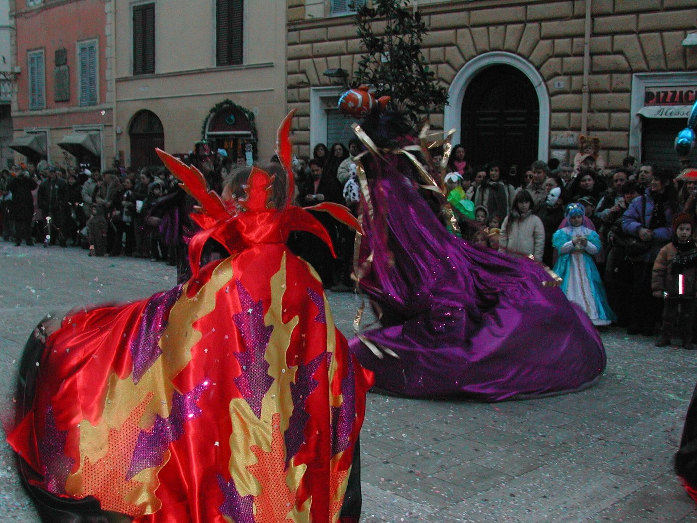
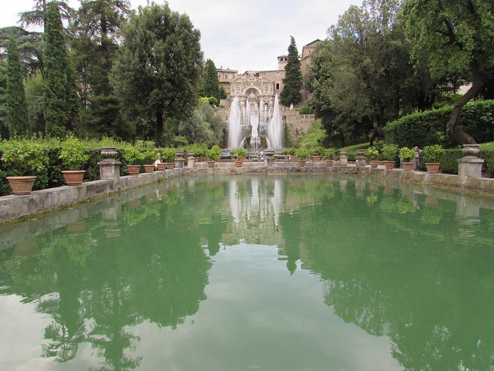
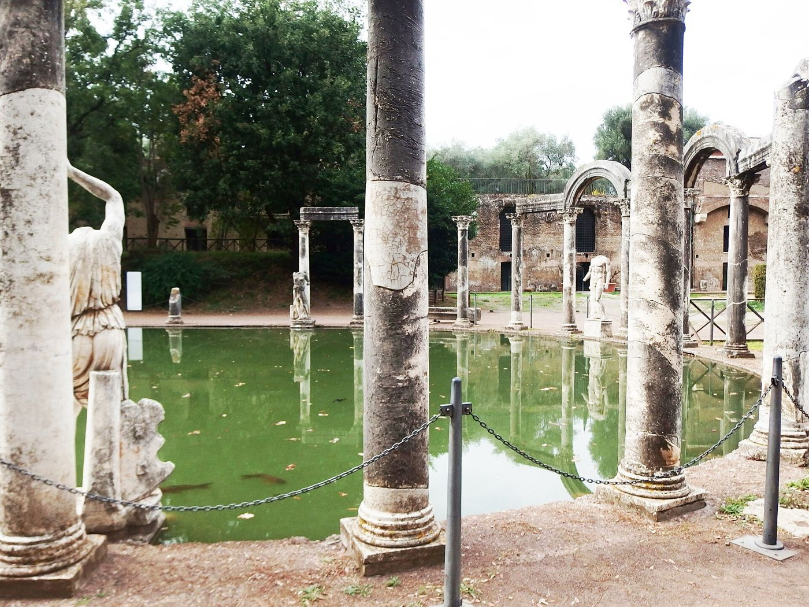
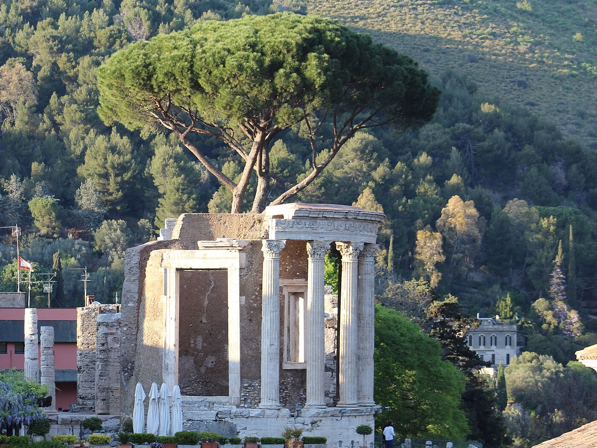
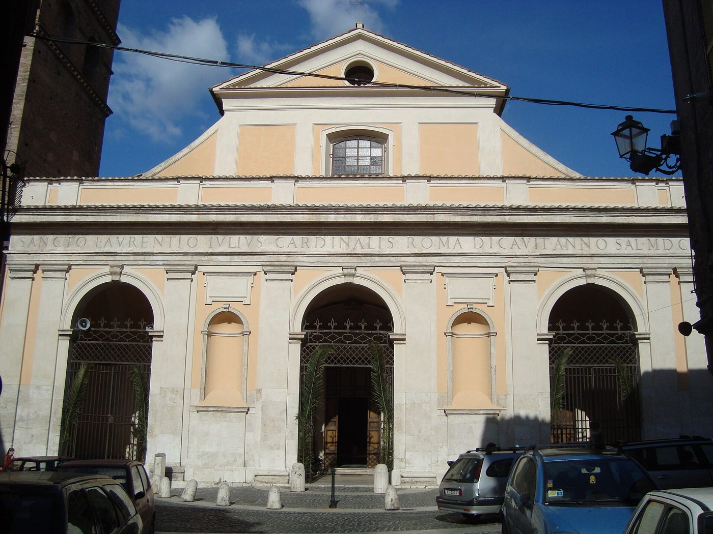
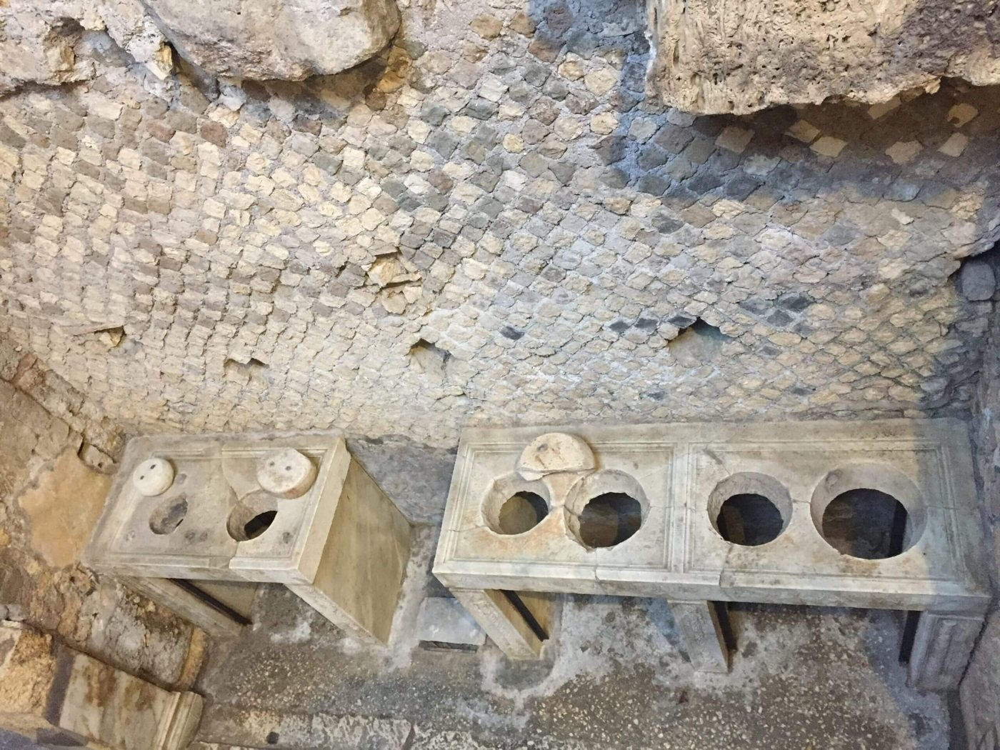
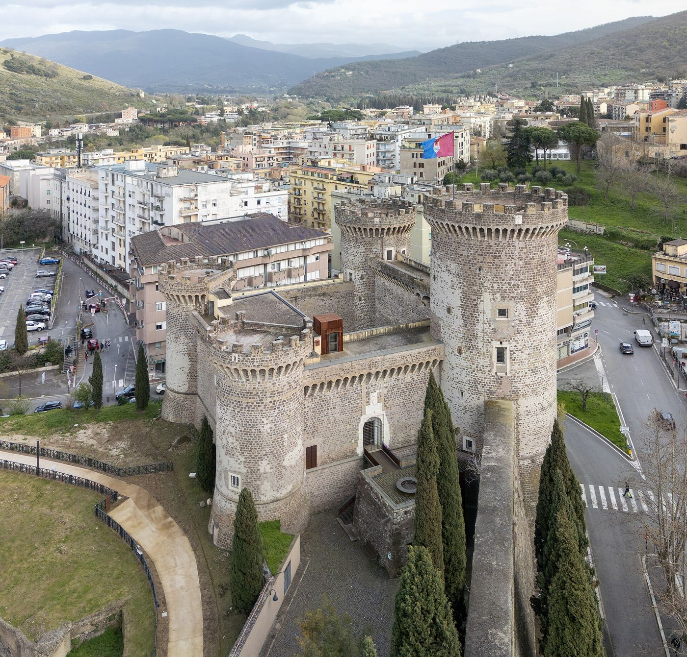
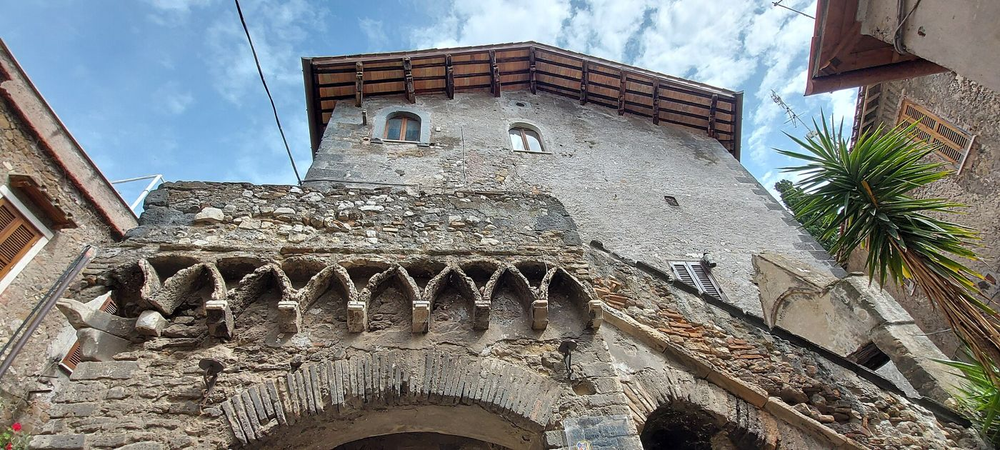
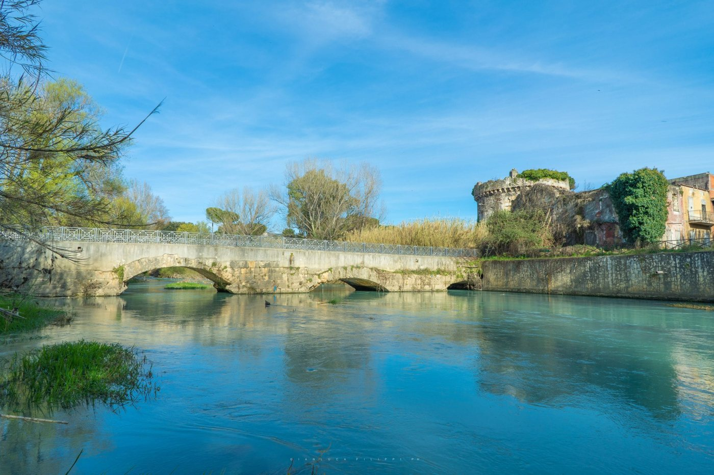

Tivoli
La città del torneo, nei giorni del suo Carnevale.
Si gioca al Park Hotel Imperatore Adriano, Via G. Garibaldi 167, Guidonia (RM), a pochi minuti da Tivoli. Come arrivare e dove dormire
Il torneo porta il nome di Tivoli e si svolge con il patrocinio dell'Amministrazione Comunale. Tivoli, l'antica Tibur, insignita del titolo di Città, sorge sui Monti Tiburtini a una trentina di chilometri da Roma, là dove l'Aniene scende a valle con le sue cascate.
Nel suo territorio ci sono due siti del Patrimonio mondiale dell'UNESCO: chi viene per il torneo ha tre ville e una città antica da vedere a pochi minuti dalla sala di gioco.
Il Carnevale
A Tivoli il Carnevale è molto sentito, e le date del torneo non sono un caso: si gioca nel fine settimana di Carnevale.
| Giovedì grasso | 4 febbraio 2027 |
| S.V.A. Carnival Chess Trophy | 5 – 7 febbraio 2027 |
| Martedì grasso | 9 febbraio 2027 |




Il Carnevale tiburtino ha origini rinascimentali: il cardinale Ippolito II d'Este invitava i nobili amici a trascorrere il periodo degli scherzi nella sua villa, tra feste mascherate e danze. I carri allegorici di cartapesta arrivarono dopo l'Unità d'Italia.
Oggi il momento più atteso è proprio la sfilata dei carri, che nelle ultime edizioni ha attraversato il centro della città la domenica pomeriggio, tra piazzale Matteotti, viale Aldo Moro e piazza Garibaldi, con gruppi mascherati e bande musicali.
Nel 2025 il Ministero della Cultura ha riconosciuto il Carnevale di Tivoli tra i carnevali storici d'Italia.
Il Carnevale Tiburtino su Visit Tivoli · Il Carnevale storico di Tivoli su Visit Lazio (in inglese) · Comune di Tivoli
Programma e aggiornamenti anche su Facebook: Comune di Tivoli · Visit Tivoli
Da completare. Programma ufficiale del Carnevale di Tivoli 2027 con date e orari delle sfilate, appena il Comune lo pubblica.
Le tre ville

Foto di Cezar Suceveanu, Wikimedia Commons, CC BY-SA 4.0 Villa d'Este
La villa rinascimentale voluta dal cardinale Ippolito II d'Este, con il giardino all'italiana e le sue fontane. È nel centro di Tivoli ed è Patrimonio mondiale dell'UNESCO dal 2001.

Foto di Palickap, Wikimedia Commons, CC BY-SA 4.0 Villa Adriana
La residenza dell'imperatore Adriano, tra i siti archeologici più visitati d'Italia. Si trova ai piedi della città ed è Patrimonio mondiale dell'UNESCO dal 1999.

Foto: Visit Tivoli, Comune di Tivoli Villa Gregoriana
Un parco di boschi, sentieri, grotte e cascate ai piedi dell'antica acropoli, affidato al FAI.

.jpg){kind=link}
La città antica e medievale

Foto di Oursana (ritagliata), Wikimedia Commons, pubblico dominio (CC0) I templi dell'Acropoli
I due templi detti di Vesta e della Sibilla, in travertino, affacciati sul precipizio di Villa Gregoriana. Sono tra i monumenti più ritratti dai viaggiatori dal Cinquecento all'Ottocento, e si vedono bene dal Ponte Gregoriano.

Foto di LPLT, Wikimedia Commons, CC BY-SA 3.0 Cattedrale di San Lorenzo
Il Duomo, dedicato a San Lorenzo e documentato già nel VI secolo, sorge sopra l'antico Foro romano. Conserva il campanile romanico; l'aspetto attuale risale alla ricostruzione del 1625, completata con il portico nel 1650.

Foto: Visit Tivoli, Comune di Tivoli Mensa Ponderaria e Augusteum
Accanto al Duomo, dove si apriva il Foro dell'antica Tibur: l'ufficio pubblico dei pesi e delle misure, con le due mense in marmo scavate dagli incavi per i campioni, e il sacello dedicato ad Augusto. Risalgono al I secolo d.C. Non è sempre aperta: conviene informarsi prima.

Foto: Visit Tivoli, Comune di Tivoli Santuario di Ercole Vincitore
Uno dei maggiori complessi sacri dell'architettura romana di età repubblicana, costruito a picco sull'Aniene e reso monumentale tra la fine del II secolo a.C. e l'82 a.C.

Foto di TivoliTibutino, Wikimedia Commons, CC BY-SA 4.0 Rocca Pia
La fortezza voluta da papa Pio II Piccolomini, che ne avviò i lavori nel 1461 per controllare la città e le vie verso Roma. Fu costruita in parte con i materiali del vicino anfiteatro.

Foto: Visit Tivoli, Comune di Tivoli Anfiteatro di Bleso
L'anfiteatro romano di età adrianea, ai piedi della Rocca Pia. In parte demolito nel 1461 per costruire la fortezza, è tornato alla luce nel 1948.

Foto di Anna Eden 86, Wikimedia Commons, CC BY-SA 4.0 La Casa Gotica e il centro storico
Un'abitazione tardo-medievale del XII-XIII secolo, in tufo e travertino, affacciata su via Campitelli. È una delle tappe del borgo medievale, da percorrere a piedi tra vicoli, piazze e case torri.

Foto di Gianluca Filippi, da Visit Tivoli, Comune di Tivoli Ponte Lucano e il Mausoleo dei Plauzi
Il ponte romano che scavalca l'Aniene lungo la via Tiburtina, non lontano da Villa Adriana, e accanto la tomba della famiglia dei Plauzi, di età augustea.
_2017.2.jpg){kind=link}


.jpg){kind=link}
Per saperne di più
A Tivoli Terme, a pochi minuti dall'albergo, ci sono le Terme di Roma, con le acque sulfuree note fin dai tempi di Augusto.
Tutti i luoghi da visitare, gli itinerari e gli eventi sono sul portale turistico del Comune: visittivoli.it